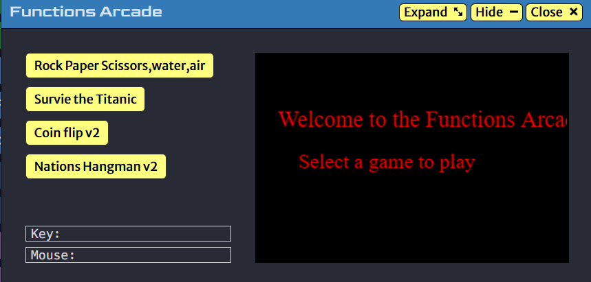

Marquice Broderick
Thomas A. Edison Career and Technical Education High School student . Also progrmaing and protyping developer
This portfolio is to show my work and my progress for alll to see and i will update this page over the summer wiht it including my other webpage and more stuff.
Links
Add your links from the Curator Guide.


The complex calculator CFU

The Calculator this one was more diffuclt to do since I had to make several
seprate operations that would run on thier own when its chose or picked on.
simple Calculator cfu
The calculator it solves math problems and it runs like a simple basic calculator and gives an answer based on what you want or need.
This simple calculator is bascially dose all the addition, subtaction , multiplying,dvision .
This calculator isnt perfect but it dose the basics and dose 2 number mathamatics .

Skills: Python
Project : Arcade

This is a basic arcade keep in mind that not everthing is perfect and there will some errs
.
Heres what the arcade dose and what happens in the the page bascially its several games that me and my
teammates worked on and this is a very extrseci work and there will be game slike Rock,Papper,Sisscors,story type
Coin flip and more . Enjoy :0
Skills: Python, Boolean, loops, if,else and elfi statements